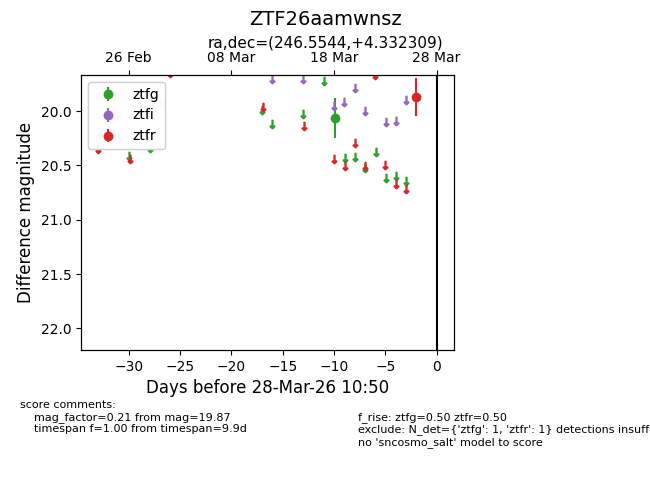
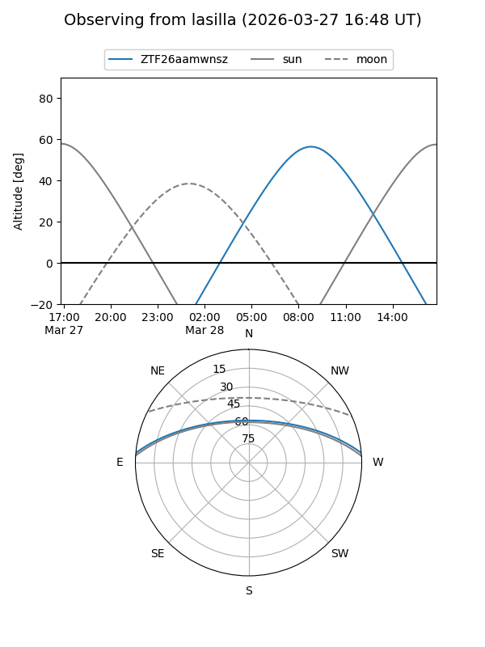
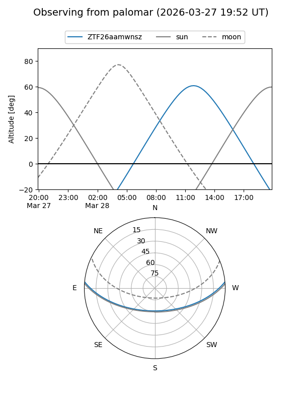

ZTF26aamwnsz
Target ZTF26aamwnsz at 2026-03-28 10:53
Aliases and brokers:
FINK: link
Lasair: link
ALeRCE: link
alt names
ZTF26aamwnsz (ztf,fink_ztf)
Coordinates:
equatorial (ra, dec) = 246.5544,+4.33231
equatorial (HMS+DMS) = 16:26:13.04,+04:19:56.31
galactic (l, b) = (18.8228,+34.04810)
Flags:
Photometry:
last ztfg=20.06, ztfr=19.87
1 ztfg, 1 ztfr detections
Lightcurve

Visibility


Additional plots